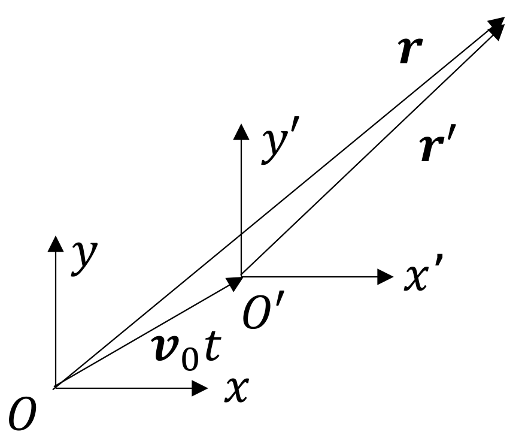
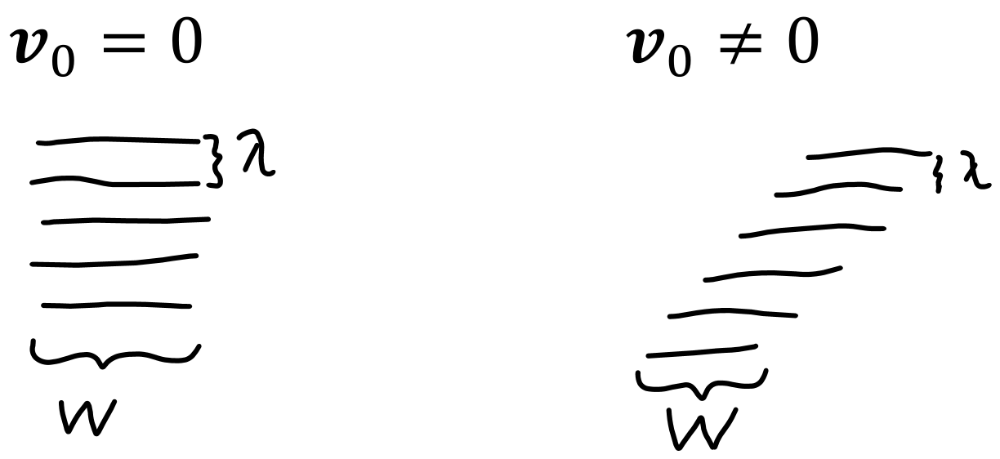
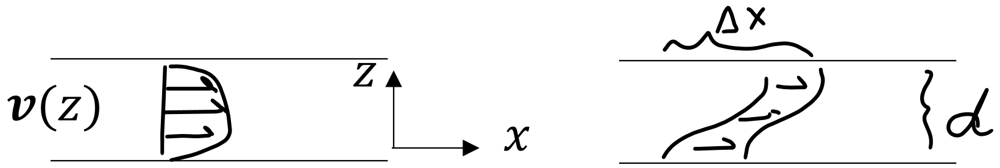
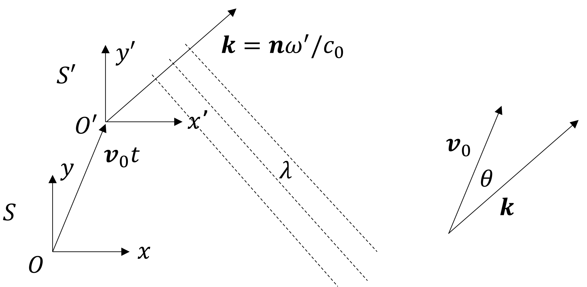
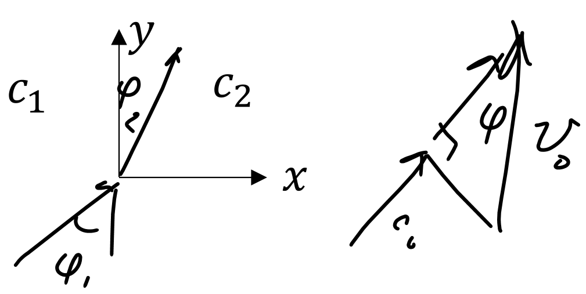
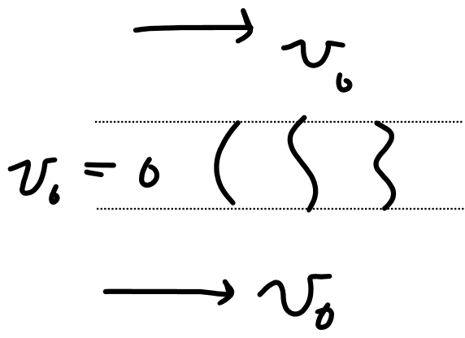
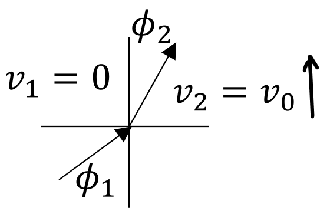
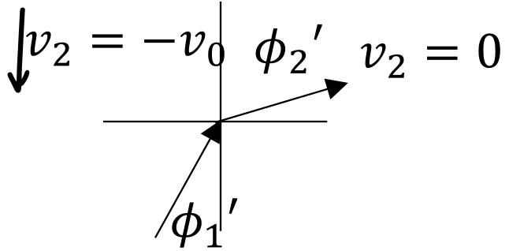
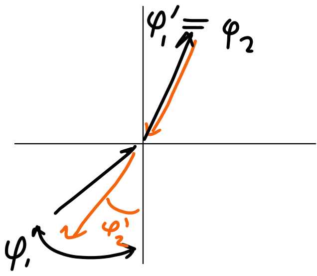

Wave and Helmholtz equations in uniform flow
See Blackstock's "Fundamentals of Physical Acoustics" page 93, for an introduction to sound in moving media.
Let \(\vec{v}_0\) be the flow velocity, which is a constant vector. Let \(\vec{r}\) be the coordinates in the stationary (lab) system \(S\), and let \(\vec{r}'\) be the cordinates in the system \(S'\) moving with respect to the medium. Then the sound pressure \(p = p(\vec{r}',t)\) satisfies the wave equation in system \(S'\),
\begin{align}\label{1move}\tag{1}
\Laplacianp p = \frac{1}{c_0^2}\frac{\partial^2 p}{\partial t^2}\,,
\end{align}
where the \('\) symbol is used to denote the Laplacian in that frame, and where \(t' = t\) (which is the same in both systems).

The situation above can be thought of as follows: suppose you are standing in a prairie, and there is a constant wind blowing with velocity \(\vec{v}_0\). A goose is flying along with the wind (i.e., in the same direction at the at the same speed as the wind) and honks while it is flying. The goose is in frame \(S'\), and the honk obeys the wave equation in the goose's frame, Eq. \eqref{1move}. Your frame is \(S\), and the honk obeys Eq. \eqref{3move} in your frame, as shall be seen.
Equation \eqref{1move} is now written in terms of the unprimed cooridinates by using the Galilean transformation,
\begin{align}
\vec{r} &= \vec{r}' + \vec{v}_0 t\label{2amove}\tag{2a}\\
t &= t'\label{2bmove}\tag{2b}
\end{align}
In Cartesian coordinates, Eq. \eqref{2amove} is represented as
\begin{align*}
x &= x' + v_{0x}t\\
y &= y' + v_{0y}t\\
z &= z' + v_{0z}t
\end{align*}
while Eq. \eqref{2bmove} remains the same. Consider the derivative of a scalar-valued test function of unprimed variables \(f(x,y,z,t)\) with respect to one of the spatial primed variables (a spatial variable in the moving frame):
\begin{align*}
\frac{\partial }{\partial x'} f(x,y,z,t) &= \frac{\partial f}{\partial x}\frac{\partial x}{\partial x'} + \frac{\partial f}{\partial y}\frac{\partial y}{\partial x'} + \frac{\partial f}{\partial z}\frac{\partial z}{\partial x'} + \frac{\partial f}{\partial t}
\frac{\partial t}{\partial x'}= \frac{\partial f}{\partial x}\,,
\end{align*}
i.e., they are unchanged, and thus the second spatial derivatives are also unchanged. Thus the sum of the second derivatives (the Laplacian in Cartesian coordinates) remains the same:
\begin{equation}\label{space}\tag{\(\star\)}
\Laplacianp = \Laplacian\,.
\end{equation}
Meanwhile, the derivative with respect to \(t'\) of a function of \(t\) is written in terms of unprimed quantities as
\begin{align*}
\frac{\partial f}{\partial t'} = \frac{\partial f}{\partial t} \frac{\partial t}{\partial t'}
+ \frac{\partial f}{\partial x} \frac{\partial x}{\partial t'}
+ \frac{\partial f}{\partial y} \frac{\partial y}{\partial t'}
+ \frac{\partial f}{\partial z} \frac{\partial z}{\partial t'} \,,
\end{align*}
which, upon noting that
\begin{align*}
\frac{\partial x}{\partial t'} &= \frac{\partial x}{\partial t} = \ex \cdot \vec{v}_0 = v_{0x}\,,\\
\frac{\partial y}{\partial t'} &= \dots = v_{0y}\,,\\
\frac{\partial z}{\partial t'} &= \dots = v_{0z}\,,
\end{align*}
becomes
\begin{align*}
\frac{\partial f}{\partial t'} &= \frac{\partial f}{\partial t} + \bigg(v_{0x}\frac{\partial }{\partial x} + v_{0y}\frac{\partial}{\partial y} + v_{0z} \frac{\partial}{\partial z} \bigg) f\\
&= \bigg(\frac{\partial}{\partial t} + \vec{v}_0\cdot \gradient\bigg)f\,.
\end{align*}
The second time derivative is therefore
\begin{align}\label{time}\tag{\(\star\star\)}
\frac{\partial^2}{\partial t'^2} = \bigg(\frac{\partial}{\partial t} + \vec{v}_0 \cdot \gradient\bigg)^2 \,.
\end{align}
By Eqs. \eqref{space} and \eqref{time}, Eq. \eqref{1move} (the wave equation in the moving frame \(S'\)) becomes, in the stationary frame \(S\),
\begin{align}\label{3move}\tag{3}
\boxed{\Laplacian p = \frac{1}{c_0^2} \bigg(\frac{\partial}{\partial t} + \vec{v}_0 \cdot \gradient\bigg)^2 p\,,}
\end{align}
where \(p = p(\vec{r},t)\).
For \(p(\vec{r},t) = p_\omega(\vec{r}) e^{-i\omega t}\) (time-harmonic waves), Eq. \eqref{3move} becomes a Helmholtz-like equation,
\begin{align*}
\Laplacian p_\omega = \frac{1}{c_0^2}(-i\omega + \vec{v}_0 \cdot \gradient)^2 p_\omega\,,
\end{align*}
which can be written as
\begin{align}\label{4move}\tag{4}
\boxed{\Laplacian p_\omega + \bigg(\frac{\omega}{c_0} + i\vec{M}\cdot \gradient\bigg)^2p_\omega =0\,,}
\end{align}
where \(\vec{M} = \vec{v}_0/c_0\).
Attention is now turned to solving Eq. \eqref{3move}. Rather than directly solving the equation, consider Eq. \eqref{3move} for no flow, whose solution is \(p_\mathrm{NF}(\vec{r},t)\):
\begin{align}\label{5move}\tag{5}
\Laplacian p_\mathrm{NF} = \frac{1}{c_0^2} \frac{\partial^2 p_\mathrm{NF}}{\partial t^2}\,.
\end{align}
The transformation given by Eqs. \eqref{2amove} (inverted) and \eqref{2bmove}
\begin{align}\tag{2'}\label{2move'}
\vec{r}' = \vec{r}- \vec{v}_0t\,,\quad t' = t
\end{align}
accounts for the flow:
\begin{align}\label{6move}\tag{6}
p\NF(\vec{r}',t') = p\NF(\vec{r}- \vec{v}_0t,t)\,.
\end{align}
This has been stated without proof. One should show that transforming the solution of Eq. \eqref{1move} this way solves Eq. \eqref{4move}.
That is to say, Eq. \eqref{6move} is the pressure field in which the effects of flow have been accounted. Uniform flow therefore generally "shears" the field:

Note that \(\lambda\) will change if the flow has a component in the direction of propagation, but not the frequency \(\omega\) because the source and receiver are stationary.
The following example illustrates how the simple substitution in Eq. \eqref{6move} gives the field in the moving medium.
Example: Laminar cross-flow
In this example, sound in a laminar cross-flow between two parallel plates is considered. The flow profile is given by the function \(\vec{v}(z)\), as shown below:

Since the sound field is translated (sheared) by the differential amount
\begin{align*}
dx = v\,dt = v \frac{dz}{c_0} = M(z) dz\,,
\end{align*}
the total shift is
\begin{align*}
\Delta x = \int_{0}^{d} M(z) dz\,.
\end{align*}
The laminar flow between parallel plates is (from fluid mechanics)
\begin{align*}
M(z) = M_0 (1 - 4z^2/d^2)\,,\quad -\frac{d}{2} \leq z \leq \frac{z}{2}\,,
\end{align*}
so the shift is
\begin{align*}
\Delta x &= 2M_0 \int_{0}^{d/2} \bigg(1 - 4\frac{z^2}{d^2}\bigg)dz = 2M_0 \bigg(z - \frac{4}{3}\frac{z^3}{d^2}\bigg)\bigg\rvert_{0}^{d/2}\\
&= \frac{2}{3} M_0 d\,.
\end{align*}
The solution to the wave equation is therefore given by the solution in the absense of flow, only displaced by the amount \(2M_0d/3\), i.e., \(p\NF(x - 2M_0d/3,z, t)\,.\)
Now suppose the flow profile is constant, i.e., \(M = M_0 = \) constant. Thus \(\Delta x = M_0 d\). So, the solution to the wave equation in that case is \(p\NF(x - M_0d,z, t)\,.\)
Doppler effect
Consider a plane wave propagating in direction \(\vec{k}\) in a frame \(S'\) that is moving with velocity \(\vec{v}_0\), where \(\theta\) is the angle between the direction of the flow (\(\vec{v}_0\)) and the direction of the wave (\(\vec{k}\)),
\begin{align}
p(\vec{r}',t) &= A e^{-i\omega(t - \vec{n}\cdot \vec{r'}/c_0)} \notag\\
&= Ae^{i(\vec{k}\cdot\vec{r}' - \omega' t)}\,, \label{7doppler}\tag{7}
\end{align}
where \(\vec{n}\) is the normal to the wavefront, \(\vec{k}= \omega'\vec{n}/c_0\) is the wavenumber, and \(\lambda = 2\pi/|\vec{k}| = 2\pi c_0/\omega'\) is the wavelength, as illustrated below. How can the wavelength \(\lambda\) be the same in both frames if the speed of sound is the same in both the moving frame and the stationary frame? Or is the speed of sound \(c_0 + v_0\) in the moving frame?

Substituting the plane wave given by Eq. \eqref{7doppler} into the Helmholtz equation with flow [Eq. \eqref{4move}] with
\begin{align*}
p_\omega = A e^{i\vec{k}\cdot \vec{r}'}\,, \quad \vec{M}= \frac{\vec{v_0}}{c_0}\,,\quad \vec{k} = \frac{\omega'}{c_0}\vec{n}\,,
\end{align*}
requires the following quantities to be calculated:
\begin{align*}
\Laplacian p_\omega &= \Laplacianp p_\omega = -k^2 p_\omega = -(\omega'/c_0)^2 p_\omega\\
i\vec{M}\cdot \gradient &= i\vec{M} \cdot \gradient' = i\vec{M} \cdot (i\omega' \vec{n}/c_0) = -M (\omega'/c_0) \cos\theta\,.
\end{align*}
Upon making these substitutions, Eq. \eqref{4move} becomes
\begin{align*}
-(\omega'/c_0)^2 + [\omega/c_0 - M (\omega'/c_0) \cos\theta ]^2=0\,.
\end{align*}
Solving for \(\omega\) and tossing the negative solution yields \(\omega - M \omega' \cos\theta = \omega'\) or
\begin{align*}
\boxed{\omega = (1 + M\cos\theta)\omega'\,.}
\end{align*}
Alternatively, the Doppler shift can be derived by transforming the solution. Start with the plane wave in the moving frame \(S'\),
\begin{align*}
p = A e^{i\vec{k}\cdot \vec{r}' - i\omega ' t}\,,
\end{align*}
where \(\vec{k} = \omega' \vec{n}/c_0\). Substituting in \(\vec{r}' = \vec{r} - \vec{v}_0 t\) into the equation for the plane wave gives
\begin{align*}
p = A e^{i\vec{k}\cdot \vec{r} - i(\omega' + \vec{k}\cdot \vec{v}_0) t} \equiv A e^{i(\vec{k} \cdot \vec{r} - \omega t)}\,,
\end{align*}
where it has been identified that
\begin{align*}
\omega &\equiv \omega' + \vec{k} \cdot \vec{v}_0 \\
&= \omega' + \frac{\omega'}{c_0} \vec{n} \cdot \vec{v}_0\\
&= (1 + M\cos\theta)\omega'\,.
\end{align*}
Sound in ducts with uniform flow
A practical problem involving waves in moving media is that of sound in ducts (e.g., air conditioning ducts, pipelines, etc.), for which the bulk fluid motion is in one direction, and in which modal solutions exist in the transverse directions. This topic is covered in Morse and Ingard, pages 714-715, or Ingard, page 317-319.

For fluid motion in the \(z\) direction, as depicted in the figure below, the Helmholtz equation describing sound in a moving medium becomes
\begin{align}
\Laplacian p_\omega &= -\bigg(\frac{\omega}{c_0} + i\vec{M} \cdot \gradient \bigg)^2 p_\omega\notag\\
&= -\bigg(\frac{\omega}{c_0} + iM \frac{\partial}{\partial z}\bigg)^2 p_\omega\,.\label{1duct}\tag{1}
\end{align}
The derivatives in \(x\) and \(y\) are unaltered, so the eigenfunctions are
\begin{align*}
p_\omega = A \cos \frac{m\pi x}{a} \cos \frac{n\pi y}{b} e^{ik_zz}\,.
\end{align*}
Substitution into Eq. \eqref{1duct} gives, on the left-hand side,
\begin{align*}
\bigg[-\bigg(\frac{m\pi}{a}\bigg)^2 -\bigg(\frac{n\pi}{b}\bigg)^2 -k_z^2 \bigg]p_\omega = -\bigg(\frac{\omega_{mn}^2}{c_0^2} + k_z^2\bigg)p_\omega\,,
\end{align*}
where \begin{align*}
\omega_{mn} = \sqrt{\bigg(\frac{m\pi c_0}{a}\bigg)^2 + \bigg(\frac{n\pi c_0}{b}\bigg)^2 }\,,
\end{align*}
which is the cutoff frequency for \(v_0 = 0\). Meanwhile, the right-hand side of Eq. \eqref{1duct} becomes,
\begin{align*}
- (\omega/c_0 + iM \partial/\partial z)^2 p_\omega = -(\omega/c_0 - M/k_z)^2 p_\omega\,.
\end{align*}
Thus one obtains from the Helmholtz equation a dispersion relation:
\begin{align*}
\frac{\omega_{mn}^2}{c_0^2} + k_z^2 &= \bigg(\frac{\omega}{c_0} - M k_z \bigg)^2\\
&= \frac{\omega^2}{c_0^2} - 2M \frac{\omega}{c_0} k_z + M^2 k_z^2\,.
\end{align*}
Rearranging the above yields
\begin{align*}
(1-M^2)k_z^2 + 2M \frac{\omega}{c_0} k_z
- \bigg(\frac{\omega^2}{c_0^2} - \frac{\omega^2_{mn}}{c_0^2}\bigg)\,,
\end{align*}
which is solved for \(k_z\) by the quadratic formula:
\begin{align*}
\boxed{k_z = \frac{\omega/c_0}{1 - M^2} \bigg( \sqrt{1 - {\Omega_{mn}^2}/{\omega^2}} - M\bigg)\,,}
\end{align*}
where \(\Omega_{mn} = \sqrt{1 - M^2} \omega_{mn}\), which is the cutoff frequency for \(v_0 \neq 0\), and where the \(\pm\) sign corresponds to the propagation direction. As a sanity check, note that for \(M =0\) (no flow), one obtains \[k_z = \pm \frac{\omega}{c_0}\sqrt{1 - \omega_{mn}^2/\omega^2}\,,\]
which is the familiar projection of the wavenumber in the \(z\) direction in a waveguide (from Acoustics I/II).
The phase speed and group speeds are
\begin{align*}
c_\mathrm{ph} &= \omega/k_z = \frac{(1-M^2)c_0}{\pm \gamma - M}\,, \quad \gamma = \sqrt{1 - \Omega_{mn}/\omega^2}\,.\\
c_\mathrm{gr} &= \frac{d\omega}{dk_z} = \frac{1}{dk_z/d\omega}\\
&= \frac{\gamma (1-M^2) c_0}{\pm 1 - \gamma M}\,.
\end{align*}
For this discussion, consider only \(+\) direction propagation. Then, as another sanity check, for \(\omega \to \infty\), \(\gamma \to 1\), for which
\begin{align*}
c_\mathrm{ph} = c_\mathrm{gr} = (1+M) c_0 = c_0 + v\,,
\end{align*}
which checks with intuition, i.e., the energy travels at the speed that is the sum of the wave speed and the ambient speed. Meanwhile, the cutoff frequency is the frequency at which the group velocity vanishes, which corresponds to setting \(\gamma = 0\), for which
\begin{align*}
\omega_c = \Omega_{mn} = \sqrt{1 - M^2}\omega_{mn}\,.
\end{align*}
Then for \(\omega \leq \omega_c\),
\begin{align*}
k_z = \frac{\omega/c_0}{1 - M^2} \bigg(i \sqrt{\frac{\Omega_{mn}^2}{\omega^2} - 1} - M\bigg)\,.
\end{align*}
The above equation is an interesting result, since it shows that evanescent waves "sail" along with the bulk motion of the fluid in the \(z\) direction at the speed \(v_0\).
Refraction with flow
Now the refraction of sound is discussed in the context of a medium with flow. This topic is covered in Morse and Ingard, pages 708-710.
Consider the incident and transmitted plane waves
\begin{align*}
p_i &= A_i e^{i\vec{k}_1 \cdot \vec{r}}\\
p_t &= A_t e^{i\vec{k}_2 \cdot \vec{r}}
\end{align*}
where
\begin{align*}
\vec{k}_i = k_i (\sin\phi_i \ex + \cos\phi_i \ey)\,,
\end{align*}
as illustrated below:

The Helmholtz equation with flow reads
\begin{align*}
\Laplacian p_\omega = -\bigg(\frac{\omega}{c_0} + i\vec{M} \cdot \gradient\bigg)^2 p_\omega\,.
\end{align*}
Writing \(\gradient \mapsto i\vec{k}\) and \(\vec{M} = \vec{v}_0/c_0\) gives
\begin{align*}
-k^2 p_\omega &= - \bigg(\frac{\omega}{c_0} - \vec{M}\cdot \vec{k} \bigg)^2 p_\omega\\
&= -\bigg( \frac{\omega}{c_0} - M k \cos\phi\bigg)^2 p_\omega\,.
\end{align*}
where it has been noted that the angle between the direction of the wave propagation and the flow is \(\phi\). Thus
\begin{align*}
k = \frac{\omega}{c_0} - Mk\cos\phi\,,
\end{align*}
which, solving for \(k\), yields
\begin{align}\label{a refract}\tag{a}
k = \frac{\omega/c_0}{1 + M\cos\phi} = \frac{\omega}{c_0 + v_0\cos\phi}\,.
\end{align}
At \(x = 0\), by the continuity of the pressure field,
\begin{align*}
A_i e^{ik_1 y\cos\phi_1} = A_t e^{ik_2 y\cos\phi_2}\,.
\end{align*}
To satisfy this equation, the phases must match
\begin{align}\label{b refract}\tag{b}
k_1 \cos\phi_1 = k_2 \cos\phi_2\,.
\end{align}
Combining Eqs. \eqref{a refract} and \eqref{b refract} yields
\begin{align*}
\frac{\omega \cos\phi_1}{c_1 + v_1 \cos\phi_1} = \frac{\omega \cos\phi_2}{c_2 + v_2 \cos\phi_2}\,.
\end{align*}
which, solving for \(\cos\phi_2\), reads
\begin{align*}
\cos\phi_2 = \frac{c_2 \cos\phi_1}{c_1 - \Delta v \cos\phi_1}
\end{align*}
where \(\Delta v = v_2- v_1\). The critical angle, which is the \(\phi_{1c}\) that sets \(\phi_2 = 0\), can therefore be found:
\begin{align*}
c_2 \cos\phi_{1c} = c_1 - \Delta v \cos\phi_{1c} \implies \cos\phi_{1c} &= \frac{c_1}{c_2 + \Delta v}\,.
\end{align*}
Example: Wind channels creating a waveguide for sound
The equation for the critical angle, \(\cos\phi_{1c} = {c_1}/({c_2 + \Delta v})\), reduces to \(1/(1+M)\) if \(c_1 = c_2 = c_0\), \(v_1 = 0\), \(v_2 = v_0\). These are the conditions that describe wind in an otherwise homogeneous medium. As long as sound is incident at angles less than the critical angle given by \(\phi_{1c} = \arccos [(1+M)^{-1}]\), no sound can enter the moving medium. Consider two such interfaces, as shown below:

Assuming the sound in the middle layer in which \(v_0=0\) is confined to angles smaller than the critical angle, the interfaces with the moving media serve as idealized boundaries. Thus, modes can develop in the middle layer, and the moving media act as a waveguide for sound.
Interestingly, the flow at the boundary of two media results in nonreciprocity, also known as "broken symmetry." This is illustrated by example.
Example: Nonreciprocity due to reflection at a boundary with flow
The figures in this example are incorrect. I need to update them.
Suppose \(c_1 = c_2 = c_0\), i.e., there is only one medium, and the interface separates part of the medium that is moving from another part of the medium that is stationary. Thus \(\cos\phi_2 = \frac{c_2 \cos\phi_1}{c_1 - \Delta v \cos\phi_1}\) becomes
\begin{align*}
\cos\phi_2 = \frac{1}{\sec\phi_1 - (M_2 - M_1)}\,.
\end{align*}
Two cases are now considered, the first corresponding to wave motion from medium 1 to medium 2, and the second corresponding to motion from medium 2 to medium 1:
Case I.
For motion from medium 1 to medium 2, let \(M_1 = 0, M_2 = M = v_0/c_0\):
\begin{align*}
\cos\phi_2 = \frac{1}{\sec\phi_1 - M}
\end{align*}

Case II.
Now consider propagation in the reverse direction by setting \(\phi_1' = \phi_2, M_1 = -M, M_2 = 0\). These assignments can be obtained by rotating the figure for Case I above by \(180^\circ\) and noting that the wave originating from the second medium would be traveling against the direction of the fluid motion. Then, the equation for \(\cos\phi_2'\) becomes
\begin{align*}
\cos \phi_2' &= \frac{1}{\sec\phi_1' - M} = \frac{1}{\sec\phi_2 - M} = \frac{1}{\sec \phi_1 - M - M}\\
&= \frac{1}{\sec\phi_1 - 2M} = \frac{\cos\phi_1}{1 - 2M\cos\phi_1}\\
& > \cos\phi_1
\end{align*}
Since \(\cos\phi_2 > \cos\phi_1\), \(\phi_2'\) is less than \(\phi_1\). Thus the exchanging source and receiver change the wave behaviour, and reciprocity is broken.

The full situation is written below, following Fig. 11.5 in Morse and Ingard (but beware of the typo in their figure: \(\phi_2\) on the LHS should be primed).
